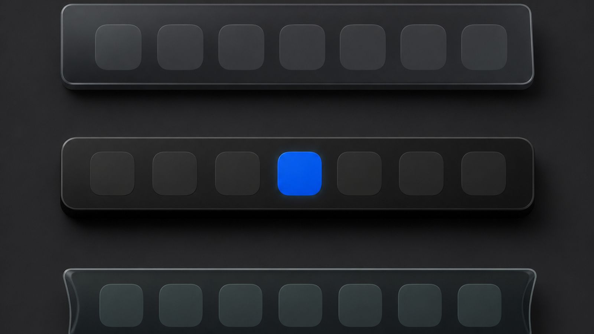

Superdock
SuperdockMac Dock replacements in 2026: what each one actually changes

Short answer: there are three kinds of Dock tool for the Mac. Tweakers change Apple's Dock through its hidden settings. Add-ons leave the Dock alone and layer features on top, usually window previews. Full replacements draw their own dock and hide Apple's, which is the only kind that can change what the tiles are, for example one icon per Chrome profile. Superdock is a full replacement built to look identical to Apple's.
What can a Dock tweaker do?
Apple's Dock has settings with no interface: icon size steps, autohide delay, spacer tiles, recent-apps section, position. Tweakers expose these. They cannot add tile types or change how windows map to icons, because the Dock itself still decides that. If your wish is cosmetic, a tweaker is the smallest change.
What does a Dock add-on do?
Add-ons watch the pointer over Apple's Dock and show something extra, most often window previews on hover, sometimes a window switcher. They cannot change the icons: Chrome is still one icon, and clicking still lands on whichever window was last in front. They coexist with Apple's Dock, so nothing else changes.
When do you need a full replacement?
When the problem is what the icons are. One icon per Chrome profile, a dock on every monitor with per-display running apps, clickable dock edges: each needs a dock that composes its own row. The cost of a replacement is trust. It must look right, behave right, and put Apple's Dock back when it quits. Things to check before installing one:
- Fidelity. Does it match Apple's icon size, spacing, glass and running dots, or does it look like a foreign app? Superdock's layout is measured against Apple's Dock from screenshots, pixel by pixel.
- Restore on quit. Apple's Dock should come back exactly as configured. Superdock snapshots the Dock's settings, restores them on quit, and runs a watchdog that restores them if the app dies.
- Permissions. A replacement needs Accessibility to see windows; anything asking for more should say why.
- Signing. Notarized by Apple, with signed updates, so the download opens without warnings.
- Pricing. Superdock is $7.99 once for up to five Macs, with a 14-day trial and no subscription.
Which one should I pick?
Cosmetic wish: a tweaker. Previews only: an add-on. Chrome profiles, multiple monitors, a window switcher, or all three: a full replacement, and Superdock is built for exactly that case.
Frequently asked questions
Will a replacement slow my Mac down?
It should not be noticeable. Superdock idles at zero CPU and reads other apps' windows on a background queue at a slow cadence.
Can I go back?
Quit Superdock and Apple's Dock returns with your previous settings. Uninstalling is dragging the app to the Trash.
Does it work on macOS 26?
Yes. Superdock requires macOS 14 or later and follows the macOS 26 icon styles and Liquid Glass look.
Download Superdock for Mac Free for 14 days, no account. $7.99 once after that.